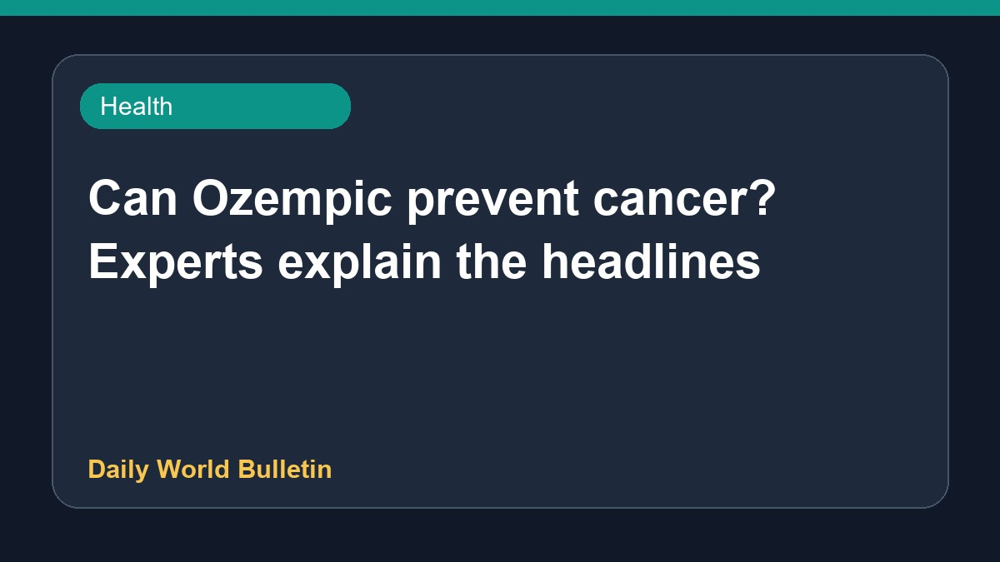

Can Ozempic prevent cancer? Experts explain the headlines

Recent headlines suggest that drugs like Ozempic might prevent cancer, but medical experts caution that these claims are easily misunderstood. Discussions focus on GLP-1 receptor agonists and their potential association with cancer risk, including links to breast cancer survival among diabetes patients and reduced risks of obesity-related cancers. However, doctors emphasize that interpreting these studies requires careful analysis. Further research is necessary to fully understand any direct connection between these medications and cancer prevention.
Original source: Health News Sources
Can Ozempic prevent cancer? A doctor explains why the headlines are easy to misread - Japan Today ↗
Can Ozempic prevent cancer? A doctor explains why the headlines are easy to misread - Japan Today ↗